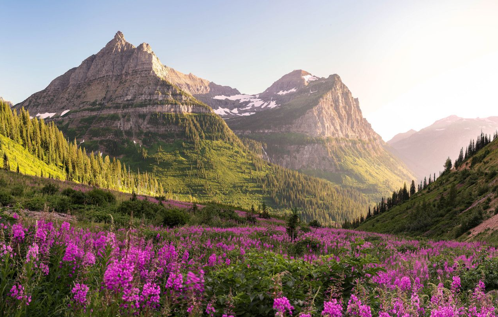

Experiment 2 - Living Impressions
Description
The goal of this experiment was to recreate an iconic image taken at Glacier National Park. I wanted to capture the essence of the image, the mountains in the back, the hills and flower field.
Technical
The colors were taken from the photograph using a color picker tool. The trees were rendered with triangle primitives, while the flowers were made using circles. The background mountain and two hills are made using random polygons using vertex calls, and different seed values lead to different compositions. To add some movement and life to the image, I also added a sunrise that makes the image look like a timelapse.
Reflection
What I struggled with the most was how to make the two hills. Initially, I wanted to make them using triangles, but I felt that it did not look organic enough. Instead, I opted to go with a similar strategy to the mountains in the background. I also had some issues with the sun not looking natural. I was able to remedy this by adding halos that made the sky around the sun a lighter color, making it more realistic. Although there were a few challenges, this project was really fun!